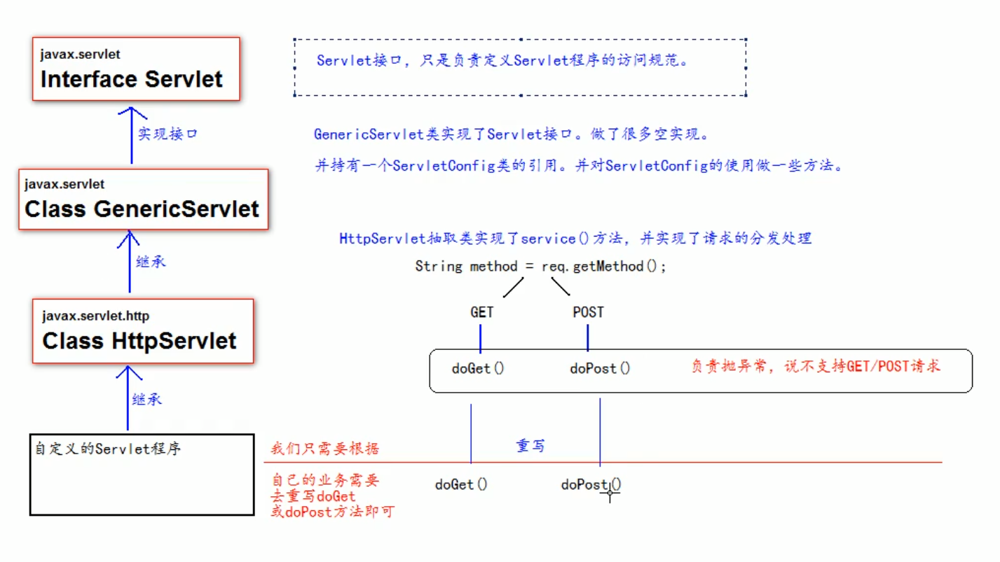

Servlet定义
Servlet是一个Java应用程序，运行在服务器端，用来处理客户端请求并作出响应的程序。
实现Servlet的主要方式
程序实现Servlet接口（很少使用）
- 编写类实现Servlet接口
- 根据业务重写service方法
- 到web.xml中配置Servlet程序的访问地址（基于注解时不需要）
程序继承HttpServlet类（一般使用这种）
- 编写类继承HttpServlet类
- 根据业务需要重写doGet或doPost方法
- 到web.xml中配置Servlet程序的访问地址（基于注解时不需要）
在IDEA中直接创建Servlet程序
实质上还是第二种方法，只是IDEA帮你做了一些通用的工作
Servlet的生命周期
- 执行Servlet构造器方法，该方法在初次访问时调用一次。由Servlet容器（Tomcat）创建。这说明 Servlet 是单实例的!
- 执行init初始化方法，该方法在初次访问时调用一次。
- 执行service方法，该方法在每次访问时都会调用一次。
- 执行destory方法，该方法在web工程停止时调用一次。 用于释放当前 Servlet 所占用的资源。
Servlet接口的架构

Servlet的域对象
- 概念：可以在不同Servlet之间传递数据的对象，就是域对象。通俗的讲就是这个对象本身可以存储一定范围内的所有数据，通过它就能获取和存储数据。
- 域对象共有的方法：
getAttribute(String name)获取对应的数据getAttributeNames()获取所有的keyremoveAttribute(String name)移除对应的数据setAttribute(String name, Object object)设置数据
- Servlet的三大域对象分别为ServletRequest域、HttpSession域、ServletContext域
- ServletRequest：
- 生命周期：请求开始到请求结束
- 作用域：整个请求链（包括请求转发）
- HttpSession：
- 生命周期：会话开始到会话结束，服务器会为每个浏览器创建一个供其独享的Session对象，当一段时间内，session没有被使用（默认是30分钟），服务器会销毁该session。
- 作用域：一次会话
- ServletContext：
- 生命周期：服务器开启到服务器关闭
- 作用域：整个web应用
ServletConfig类
- ServletConfig类是Servlet程序的配置信息类，里面封装了一些初始化配置的信息
- Servlet程序和ServletConfig对象都是由Tomcat负责创建，供我们使用。
- 每创建一次Servlet程序时，就创建一个ServletConfig对象。
- 每个ServletConfig对象都只能获取自己的Servlet的信息，不能跨域获取
- 重写init方法时要带上父类的init方法，如果不带上，则在使用ServletConfig相关方法时就会引发NullPointerException，这是因为父类GenericServlet的init方法中保存了ServletConfig对象，如果重写了init方法，该对象就会丢失，故而引发NullPointerException。
- 作用：
- 获取Servlet程序的别名，即servlet-name的值
servletConfig.getServletName() - 获取初始化参数init-param
servletConfig.getInitParameter() - 获取ServletContext对象
servletConfig.getServletContext()
- 获取Servlet程序的别名，即servlet-name的值
ServletContext类
- ServletContext是接口，表示Servlet上下文对象
- 一个web工程只有一个ServletContext对象实例，在web工程启动时创建，停止时销毁
- ServletContext对象是一个域对象
- 域对象是可以像map一样存取数据的对象，域指的是存取数据的操作范围
1
2
3存数据 取数据 删除数据
Map put() get() remove()
域对象 serAttribute() getAttribute() removeAttribute()
- 域对象是可以像map一样存取数据的对象，域指的是存取数据的操作范围
- 作用：
- 获取web.xml中配置的上下文参数context-param:
servletContext.getInitParameter() - 获取当前的工程路径，格式：/工程路径:
servletContext.getContextPath() - 获取工程部署后在服务器硬盘上的绝对路径:
servletContext.getRealPath("/")其中/在服务器解析时，表示地址为：http://ip:port/工程路径映射到IDEA为web目录 - 像map一样存储数据
- 获取web.xml中配置的上下文参数context-param:
HttpServletRequest类
- 作用：每次只要有请求进入Tomcat服务器，Tomcat服务器就会把请求过来的HTTP协议信息解析好封装到Request对象中，然后传递到service方法（doGet和DoPost中给我们使用，我们可以通过HttpServletRequest对象，获取到所有请求的信息。（每次请求创建一个，请求完成即销毁）
- 常见API：
request.getRequestURI()：获取请求的资源路径request.getRequestURL()：获取请求的urlrequest.getRemoteHost()：获取客户端ip地址request.getHeader(String key)：获取请求头中对应键的值request.getMethod()：获取请求方式request.getParameter(String key)：获取请求参数request.getParameterValues(String key): 获取请求参数，用于参数值有多个时
- 通常在doPost方法的第一行写
request.setCharacterEncoding("UTF-8");用来解决post请求的中文乱码问题 - HttpServletRequest对象也是域对象。每个请求对应着唯一一个HttpServletRequest对象，而且在请求结束之前会一直存在，故在处理请求过程中可以使用
request.setAttribute(String name, Object o)方法对该对象添加属性，用request.getAttribute(String name)获取该对象的属性，从而执行一些操作。 - 请求转发：服务器收到请求后，从一个资源转到另一个资源的操作
- 特点：1、浏览器地址栏没有改变。2、属于一次请求：由多个servlet资源共同完成的同一个请求，故HttpServletRequest对象的作用域涵盖请求转发过程，从而这些servlet资源可以共享该对象中的数据。3、能访问WEB-INF中的资源。4、不可以访问当前工程以外的资源。
RequestDispatcher requestDispatcher = request.getRequestDispatcher("/目的资源名称");请求转发必须以斜杠/开头，/表示http://ip:port/工程路径映射到IDEA为web目录- base标签的作用：所有的相对路径都是以base标签中的地址为参照。在没有base标签时，所有路径都以当前地址栏中的地址为参照，这在某些情况下会出错（如请求转发时，地址栏中的地址不变，但页面改变，若此页面中有相对路径，则参考基准不再是当前页面，而是地址栏的地址，从而出错）。若在页面中引入base标签，则相对路径参考基准成为base标签的路径。base标签在HTML文档的head标签内，如
<base herf="http://localhost:8080/project/a/b.html>。
HttpServletResponse类
- 作用：HttpServletResponse类和HttpServletRequest类一样，每次请求进来，Tomcat服务器都会创建一个Response对象传递给Servlet程序去使用。HttpServletRequest表示请求过来的信息，HttpServletResponse表示所有响应的信息，如果需要设置返回给客户端的信息，都可以通过HttpServletResponse对象进行设置。
- 输出流：HttpServletResponse类通过流将响应传递给客户端。
- 字节流
getOutputStream();常用于下载（传递）二进制数据 - 字符流
getWriter();常用于回传字符串（常用）
- 两个流只能互斥使用
- 字节流
- 中文乱码：HttpServletResponse响应的默认字符集为ISO-8859-1，所以会中文乱码，可以通过
response.setContentType("text/html; charset=UTF-8");将服务器和浏览器的字符集以及响应头都设置为UTF-8，就能解决中文乱码问题。此方法必须在获取流对象之前调用才有效 - 请求重定向：
- 第一种方法：在下图的response1中写
response.setStatus(302)来设置响应状态码，response.setHeader("Location", "http://ip:port/工程路径/response2来设置响应头，告知新地址。 - 第二种方法（推荐使用）：在下图的response1中写
response.sendRedirect(http://ip:port/工程路径/response2即可。 - 请求重定向是两次独立的请求，只是第二次有浏览器代劳，不需要手动发起请求而已。
- 特点：1、浏览器地址栏发生变化。2、属于两次请求。3、前后两个servlet资源不共享request域中的数据。4、不能访问WEB-INF中的资源。5、可以访问当前工程以外的资源。

- 第一种方法：在下图的response1中写
web中 / 的不同含义
- 在web中 / 斜杠是一种绝对路径
- / 斜杠如果被浏览器解析，得到地址为：
http://ip:port/，如html中的<a href="/">斜杠</a> - / 斜杠如果被服务器解析，得到地址为：
http://ip:port/工程路径，如<url-pattern>/hello</url-pattern>、servletContext.getRealPath("/")、request.getRequestDispatcher("/") - 特殊情况：
response.sendRediect("/");重定向，会将 / 斜杠发送给浏览器解析，得到http://ip:port/
基于xml的方式
Servlet中web.xml的配置
1 |
|
从url定位到Servlet程序过程
对照上方的xml配置文件：当在地址栏输入http://localhost:8080/tomcat_war_exploded/hello时，由8080定位到Tomcat服务器，再由/tomcat_war_exploded定位到该工程，然后根据/hello定位到xml配置文件中<servlet-mapping>标签下的<url-pattern>标签，其对应的<servlet-name>标签值为HiServlet，再根据这个标识符找到相同名的<servlet>标签，根据其标签下<servlet-class>的值定位到类的位置，然后执行类中的service方法。
Springboot 中的 Servlet
Springboot 自带 tomcat 这一 web 容器，在 8080 端口监听连接请求。在 tomcat 中一个 context 容器就是一个 web 应用，一个web 应用可以有多个 servlet。
当 tomcat 接收到一个请求后，根据请求路径找到对应的 web application，然后进入该 web application 的 DispatcherServlet，之后就是 SpringMVC 流程。
注意：HttpServletRequest和HttpServletResponse是在调用servlet之前由tomcat创建的，然后才将这两个对象作为参数调用servlet。

Filter过滤器和Spring AOP拦截器
Spring的拦截器与Servlet的Filter有相似之处，比如二者都是AOP编程思想的体现，都能实现权限检查、日志记录等。
Filter是在Servlet规范中定义的，是Servlet容器支持的，而拦截器是在Spring容器内的，是Spring框架支持的。因此，Filter 的使用必须依赖于 Servlet容器，而拦截器不需要。而且拦截器是Spring中的组件，可以使用Spring中的所有资源，Filter 不能。
Filter在只在Servlet前后起作用。而拦截器能够深入到方法前后、异常抛出前后等，因此拦截器的使用粒度更细。所以在Spring构架的程序中，要优先使用拦截器。
Filter 通过Java的回调机制实现。 Interfactor是基于Java的反射机制实现。
执行顺序：过滤前-拦截前-Action处理-拦截后-过滤后。

JAVA回调机制(CallBack)
当要调用一个函数的时候，需要先给它传入一个函数，供其在合适的时候使用，这个被传入的函数就叫回调函数。如 Thread 的 run函数，以及Consumer、Predict函数等都是回调函数。